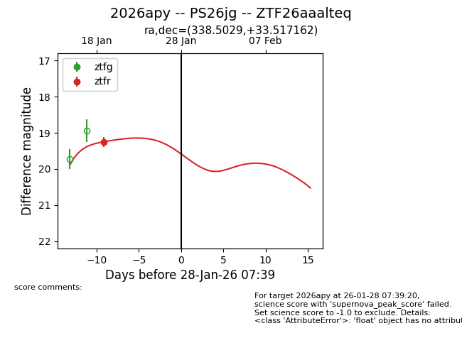
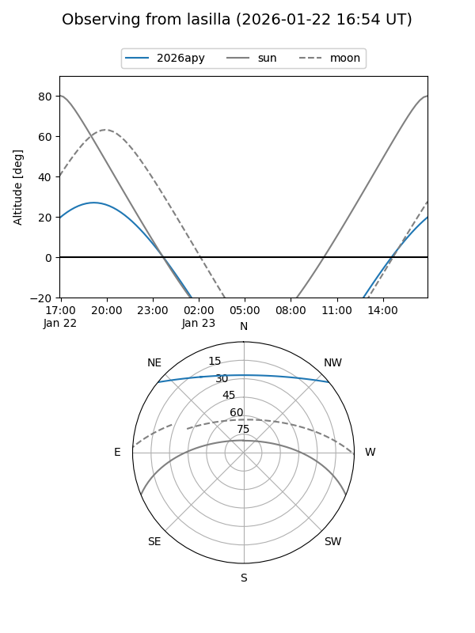
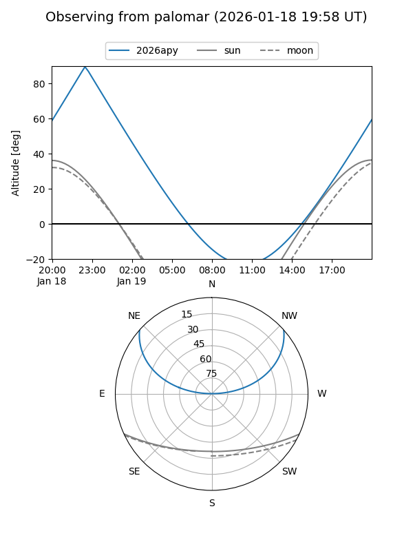
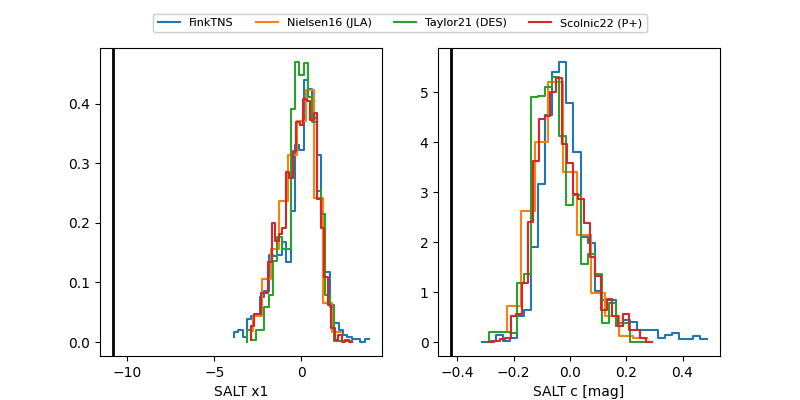

2026apy
Target 2026apy at 2026-01-27 22:26
Aliases and brokers:
FINK: link
Lasair: link
ALeRCE: link
TNS: link
YSE: link
alt names
ZTF26aaalteq (ztf,fink_ztf)
2026apy (tns,yse)
PS26jg (panstarrs)
Coordinates:
equatorial (ra, dec) = 338.5029,+33.51716
equatorial (HMS+DMS) = 22:34:00.69,+33:31:01.78
galactic (l, b) = (92.6353,-21.14714)
Flags:
Photometry:
last ztfr=19.25
1 ztfr detections
Lightcurve

Visibility


Additional plots
